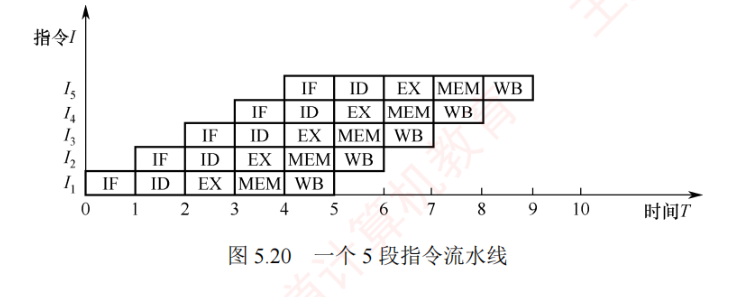
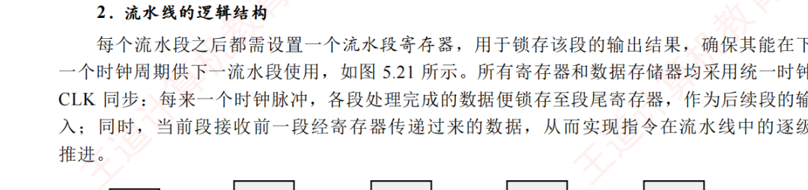
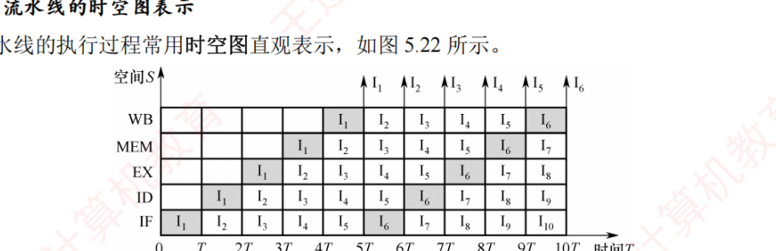
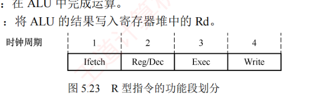
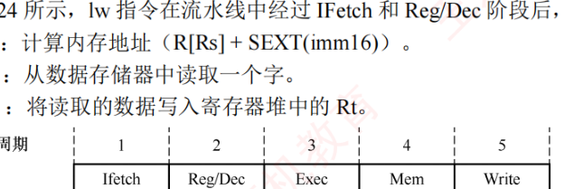
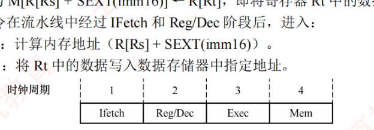
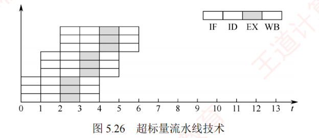

5.6 指令流水线
前面介绍的单周期处理器采用串行方式执行指令，同一时刻仅有一条指令处于执行状态，导致各功能部件的利用率较低。现代计算机普遍采用指令流水线技术，使多条指令分别在 CPU 的不同功能部件中并发执行，从而显著提升资源利用率和程序的整体执行效率。本节内容最多也最重要：基本概念（5.6.1）、基本实现与性能计算（5.6.2）、MIPS 五段分析（5.6.3）、三类冒险及处理（5.6.4）、高级流水线技术（5.6.5）。
5.6.1指令流水线的基本概念
提升处理器并行性的主要途径有二：① 时间上的并行——将一个任务分解为多个阶段，各阶段由专用功能部件依次处理，并允许多个任务在不同阶段同时推进，即流水线技术；② 空间上的并行——在一个处理器内配置多个相同的部件，使其并行工作，称为超标量处理器。
一条指令的执行过程可划分为若干个有序的阶段，每段由专门的功能部件完成。若将这些阶段视为流水线的各级（或称流水段），则整个指令执行流程便构成一条指令流水线。典型的五段指令流水线将指令执行划分为以下阶段：
- 取指（IF）：从指令存储器中读取指令；
- 译码/读寄存器（ID）：对指令进行译码，并从寄存器堆中读取操作数；
- 执行/计算地址（EX）：执行算术逻辑运算或计算有效地址；
- 访存（MEM）：访问存储器，完成数据的读写操作；
- 写回（WB）：将执行结果写回寄存器堆。
通过重叠执行，可在第 \(k\) 条指令处于译码阶段时，启动第 \(k+1\) 条指令的取指阶段，从而实现多条指令在不同流水段中并行推进。图 5.20 展示了五段流水线的理想执行时序。

在理想情况下（无冒险、无停顿），每个时钟周期均有一条新指令进入流水线，同时有一条指令完成执行，此时每条指令的平均时钟周期数（CPI）趋近于 1。
5.6.2流水线的基本实现
1. 流水线设计的原则
在单周期实现中，尽管并非所有指令都需要完整经历全部 5 个阶段，但时钟周期必须以执行时间最长的指令路径为基准。因此，单周期 CPU 的时钟频率受限于数据通路中的最长路径。流水线设计遵循以下原则：
- 流水段的数量应以最复杂指令所需的功能段数为准；
- 每个流水段的时长以其所需的操作为准。
例如，某条指令的各阶段延迟如下：① 取指 200ps；② 译码 100ps；③ 执行 150ps；④ 访存 200ps；⑤ 写回 100ps。该指令在单周期处理器中的总执行时间为 750ps，流水线设计中时钟周期取决于最长的阶段，即 200ps。因此，每条指令从进入流水线到流出需经历 5 个周期，总延迟为 1000ps，大于单周期实现的 750ps。这表明，流水线并不能缩短单条指令的执行延迟。然而，对于包含 \(N\) 条指令的程序，单周期处理器总时延为 \(N \times 750ps\)，而流水线处理器总时延为 \((N+4) \times 200ps\)。当 \(N\) 较大时，流水线的效率显著更高，整体吞吐率大幅提升。
2. 流水线的逻辑结构
每个流水段之后都需设置一个流水段寄存器（也称锁存器），用于锁存该段的输出结果，确保能在一个时钟周期供下一流水段使用，如图 5.21 所示。所有寄存器和数据存储器均采用统一时钟 CLK 同步：每来一个时钟脉冲，各段处理完成的数据便锁存至段尾寄存器，作为后续段的输入；同时，当前段接收前一段寄存器传递过来的数据，从而实现指令在流水线中的逐段推进。

一条指令依次经过 IF、ID、EX、MEM、WB 五个流水段，当第一条指令进入 WB 段时，各流水段分别包含一条不同的指令，此时流水线达到满载状态，最多可同时有 5 条指令处于不同的执行阶段。
3. 流水线的时空图表示
流水线的执行过程常用时空图直观表示，如图 5.22 所示。图中，横轴表示时间（单位为时钟周期 \(T\)），纵轴表示流水线段。指令 \(I_1\) 在时刻 0 进入流水线，于第 5T 时完成；指令 \(I_2\) 在时刻 \(T\) 进入流水线，于时刻 6T 完成；以此类推。从时刻 5T 起，每个周期结束时都有一条指令完成。例如，在时刻 10T 时，已有 \(I_1\) 至 \(I_6\) 共 6 条指令执行完成。相比之下，若采用单周期实现（每条指令需要 3.75 个时钟周期，因 750ps/200ps = 3.75），在 10T 内仅能完成约 2~3 条指令。可见，流水线通过重叠执行，显著提升了吞吐率。

4. 流水线的吞吐率分析
流水线的吞吐率（Throughput，TP）是指单位时间内流水线完成的任务数（或输出结果的数量），是衡量流水线性能的重要指标。其基本公式为：
$$TP = \frac{n}{T_k}$$其中，\(n\) 为任务总数，\(T_k\) 为完成这 \(n\) 个任务所需的时间。设流水线共有 \(k\) 段，时钟周期为 \(\Delta t\)，在理想条件下（任务连续输入、无阻塞等），完成 \(n\) 个任务所需的总时间为 \(T_k = (k+n-1)\Delta t\)，因此吞吐率可表示为：
$$TP = \frac{n}{(k+n-1)\Delta t}$$当任务数趋于无穷大时，启动阶段（前 \(k-1\) 个周期）的影响可忽略不计，此时吞吐率达到理论最大值 \(1/\Delta t\)。
5.6.3MIPS 指令集的流水线段分析
每条 MIPS 指令的前两个功能段相同：
- 取指（IFetch）：从指令存储器中取出指令并计算 PC + 4；
- 寄存器/译码（Reg/Dec）：从寄存器堆中读出操作数并对指令进行译码。
后续功能段则根据具体指令类型有所不同。
1. R 型指令的功能段划分
R 型指令属于寄存器—寄存器（RR 型）指令，其操作数和结果均位于通用寄存器中。典型的 R 型指令从寄存器 Rs 和 Rt 读取源操作数，在 ALU 中完成指定运算，并将结果写入目的寄存器 Rd。如图 5.23 所示，R 型指令在流水线中经过 IFetch 和 Reg/Dec 阶段后，进入：
- 执行（Exec）：在 ALU 中完成运算；
- 写回（Write）：将 ALU 的结果写入寄存器堆中的 Rd。

2. I 型指令的功能段划分
I 型指令包含 16 位立即数，用于立即数运算、内存访问或条件分支，是 RISC 处理器实现操作数和地址计算的重要手段。I 型运算指令先对 16 位立即数进行符号扩展（或零扩展），再与 Rs 的内容在 ALU 中运算，结果写入寄存器 Rt。
3. lw 指令的功能段划分
lw 指令的功能为 R[Rt] ← M[R[Rs] + SEXT[imm16]]，即从内存中读取一个字并存入寄存器 Rt。将 Rs 的值与符号扩展（Sign Extension）后的 16 位立即数相加，形成有效地址，再从该地址读取数据。如图 5.24 所示，lw 指令在流水线中经过 IFetch 和 Reg/Dec 阶段后，进入：
- 执行（Exec）：计算内存地址（R[Rs] + SEXT(imm16)）；
- 访存（Mem）：从数据存储器中读取一个字；
- 写回（Write）：将读取的数据写入寄存器堆中的 Rt。

4. sw 指令的功能段划分
sw 指令的功能为 M[R[Rs] + SEXT[imm16]] ← R[Rt]，即将寄存器 Rt 中的数据写入内存。如图 5.25 所示，sw 指令在流水线中经过 IFetch 和 Reg/Dec 阶段后，进入：
- 执行（Exec）：计算内存地址（R[Rs] + SEXT(imm16)）；
- 访存（Mem）：将 Rt 中的数据写入数据存储器中指定地址。

5. beq 指令的功能段划分
beq 指令的功能为：若 R[Rs] = R[Rt]，则 PC ← PC + 4 + SEXT(imm16)×4。它比较两个寄存器的值，若相等，则转移至目标地址，否则顺序执行。目标地址由当前 PC 加 4 后，再加上符号扩展并左移 2 位的 16 位立即数得到。beq 指令在流水线中经过 IFetch 和 Reg/Dec 阶段后，进入：
- 执行（Exec）：比较 Rs 与 Rt，并计算分支目标地址（PC + 4 + SEXT(imm16)×4）；
- 访存（Mem）：若比较结果相等，则将目标地址写入 PC。
需要注意的是，beq 指令的 Mem 段并非真正的内存访问，而是将 PC 操作安排在该段，以便与 lw、sw 等指令对齐。由于写 PC 的延迟小于存储器访问，因此可在 Mem 段完成。
6. j 指令的功能段划分
j 指令是无条件转移指令，其功能是直接将目标地址送入 PC。除两个公共功能段外，j 指令仅需一个功能段用于更新 PC，该操作可合并到 Exec 段完成。
从上述分析可知，lw 指令复杂，需要 5 个功能段。为统一流水线结构，其他指令通过插入「空」段（不执行实际操作的阶段）来对齐至 5 段。插入空段需遵循两个原则：
- 每条指令对任一功能部件至多使用一次（如同一条指令不能多次使用寄存器堆的写口）；
- 相同功能部件的操作应在固定段使用（如寄存器写总在第 5 段）。
因此，R 型和 I 型运算指令在 Write 前插入空 Mem 段，使其 Write 与 lw 指令对齐；sw 和 beq 指令在 Exec 后插入空 Write 段，j 指令在 Exec 后插入空 Mem 和 Write 段。通过上述对齐，所有指令均适配 5 个功能段，因此该流水线可采用 5 段流水线设计。
5.6.4流水线的冒险与处理
在指令流水线中，某些情况可能导致后续指令无法正确执行，从而引起流水线阻塞，这种现象称为流水线冒险。根据成因不同，可分为结构冒险、数据冒险和控制冒险三种类型。不同类型指令在各流水段中的操作如表 5.3 所示。
| 指令 | IF | ID | EX | MEM | WB |
|---|---|---|---|---|---|
| ALU | 取指 | 译码/读寄存器堆 | 执行 | — | 结果写回寄存器堆 |
| 取/存 | 取指 | 译码/读寄存器堆 | 计算访存有效地址 | 访存（读/写） | 将读出的数据写入寄存器堆 / — |
| 转移 | 取指 | 译码/读寄存器堆 | 计算转移目标地址、设置条件码 | 将转移地址写入 PC | — |
1. 结构冒险
结构冒险（又称资源冲突）是指不同指令在同一时刻争用同一功能部件所引发的冲突，其本质是硬件资源的物理限制。例如，在指令与数据共享同一存储器的系统中，第 \(i\) 条 LOAD 指令在第 4 个时钟周期处于 MEM 段（访问数据存储器），而第 \(i+3\) 条指令在同一周期处于 IF 段（取指令），两者同时访存，引发冲突。此时可暂停后续指令的取指操作一个周期，如表 5.4 所示。当然，若第 \(i\) 条指令不是访存指令，则其在 MEM 段不访问存储器，也就不会发生访存冲突。
| 指令 | 1 | 2 | 3 | 4 | 5 | 6 | 7 | 8 | 9 |
|---|---|---|---|---|---|---|---|---|---|
| LOAD 指令 | IF | ID | EX | MEM | WB | ||||
| 指令 \(i+1\) | IF | ID | EX | MEM | WB | ||||
| 指令 \(i+2\) | IF | ID | EX | MEM | WB | ||||
| 指令 \(i+3\) | 停顿 | IF | ID | EX | MEM | WB | |||
| 指令 \(i+4\) | IF | ID | EX | MEM |
解决结构冒险的主要方法包括：
- 遵循功能部件使用原则：确保每个功能部件在每条指令中至多使用一次，且在固定阶段使用（如寄存器写回操作统一安排在 WB 段），可避免部分结构冲突；
- 增加硬件资源：例如，将寄存器堆的读口与写口分离，支持在一个周期的前半拍写、后半拍读；或将指令存储器与数据存储器分离，现代处理器的 L1 Cache 通常采用指令 Cache 与数据 Cache 分离的设计，从根本上消除了取指与数据访存之间的资源竞争。
2. 数据冒险
指令数据冒险，其根本原因是：后面指令用到前面指令的结果时，前面指令的结果还未产生或写回。在按序发射、按序完成的流水线中，所有数据冒险都是因为前一条指令写结果之前，后面指令就需要读取而造成的，称为写后读（Read After Write，RAW）冲突。
例如，考虑下列两条指令：
I1 add R1,R2,R3 # (R2)+(R3)→R1
I2 sub R4,R1,R5 # (R1)-(R5)→R4在 RAW 冲突中，I2 的源操作数 R1 正是 I1 的目的操作数。在非流水线中，I1 先写入 R1，I2 再读取 R1，顺序自然成立。但在流水线中，I2 在 ID 流水段就要读取 R1，而 I1 要到 WB 段才将结果写回寄存器堆，导致 I2 读取的是 R1 的旧值。如表 5.5 所示，发生写后读（RAW）冲突。
| 指令 | 1 | 2 | 3 | 4 | 5 | 6 |
|---|---|---|---|---|---|---|
| add | IF | ID | EX | MEM | WB（写R1） | |
| sub | IF | ID（读R1） | EX | MEM | WB |
可采用以下方法解决 RAW 冲突。
（1）延迟执行相关指令
将数据相关的指令及后续指令都暂停若干时钟周期，直到前一条指令的结果可被安全读取。可分为软件插入空操作（nop）指令和硬件自动插入气泡（阻塞）两种方法。
由表 5.5 可知，add 指令在第 5 个时钟周期才将结果写至 R1，而 sub 指令在第 3 个时钟周期就需要读取 R1，发生 RAW 冲突。若不采取措施，sub 指令将使用错误的旧值。为此，可让 sub 指令延迟 3 个时钟周期，使其 ID 段发生在 add 指令的 WB 段之后，如表 5.6 所示。
| 指令 | 1 | 2 | 3 | 4 | 5 | 6 | 7 | 8 | 9 |
|---|---|---|---|---|---|---|---|---|---|
| add | IF | ID | EX | MEM | WB | ||||
| sub | 阻塞 | 阻塞 | 阻塞 | IF | ID | EX | MEM | WB |
此外，若寄存器堆支持在一个时钟周期的前半个时钟周期写入、后半个时钟周期读出，则 add 指令在 WB 段写入的值可在同一个时钟周期被 sub 指令在 ID 段读取。此时，add 指令的 WB 段与 sub 指令的 ID 段可重叠进行，从而仅需延迟 2 个时钟周期。
（2）采用转发（旁路）技术
设置相关转发通路，使后续指令无须等待前一条指令将计算结果写回寄存器堆，而是将其在执行阶段生成的中间结果直接转发到 ALU 的输入端。如表 5.7 所示，add 指令在 EX 段结束时已计算出 R1 的新值，并将其存于 EX/MEM 流水段寄存器中。当 sub 指令进入 EX 段时，其所需的 R1 值可直接从该流水段寄存器转发至 ALU，从而确保使用的是最新结果。
| 指令 | 1 | 2 | 3 | 4 | 5 | 6 |
|---|---|---|---|---|---|---|
| add | IF | ID | EX | MEM | WB | |
| sub | IF | ID | EX | MEM | WB |
增加转发通路后，相邻两条运算类指令之间，以及相隔一条无关指令的两条运算类指令之间的数据相关所引发的 RAW 冲突，均可通过转发有效消除。
（3）load-use 数据冒险的处理
若 load 指令与其后续的运算类指令存在数据相关，则无法通过转发技术解决，这种情况称为 load-use 数据冒险。考虑以下两条指令：
I1 load r2, 12(r1) # M[(r1)+12]→(r2)
I2 add r4, r2, r2 # (r2)+(r2)→(r4)load 指令在 MEM 段结束时才从存储器读出数据，并暂存于 MEM/WB 流水段寄存器；而紧随其后的 add 指令在其 EX 段（与 load 指令的 MEM 段处于同一周期）就需要 R2 的值。由于此时 load 指令尚未成功访存，结果不可用，因此，add 指令无法读到 R2 的旧值（转发也来不及）。
对于 load-use 数据冒险，最简单的做法是由编译器在 add 指令前插入一条 nop 指令。这样，add 指令的 EX 段就能通过转发机制，从 MEM/WB 流水段寄存器中获取 load 指令的最新结果，如表 5.8 所示。当然，最好的办法是在程序编译时进行优化，通过调整指令顺序以避免 load-use 相关的发生。
| 指令 | 1 | 2 | 3 | 4 | 5 | 6 | 7 |
|---|---|---|---|---|---|---|---|
| load | IF | ID | EX | MEM | WB | ||
| add | 阻塞 | IF | ID | EX | MEM | WB |
其中 add 指令的 EX 段（周期 5）通过转发通路从 MEM/WB 寄存器获取 load 在周期 4 访存得到的最新数据。
3. 控制冒险
指令通常顺序执行，但在遇到转移、返回、中断或异常等事件时，程序计数器（PC）的值会被改变，导致流水线断流，这种现象称为控制冒险（又称控制冲突）。
对于由分支指令引发的冲突，最简单的处理方法是推迟后续指令的执行。通常将流水线冲突产生的延迟时间周期数称为延迟损失时间片 \(C\)。在下述约定中，假设 R2 存放数据 N，R1 初值为 1，bne 指令在 EX 段完成条件判断，但直到 MEM 段（第 5 个时钟周期）末才确定是否更新 PC，因此从分支指令进入流水线到转移决策完成，共产生 3 个时钟周期延迟（定位 C = 3）。
为避免错误执行后续指令，可在分支指令后插入 \(C\) 条 nop 指令，如表 5.9 所示。
I1 loop1: add R1,R1,#1 # (R1)+1→R1
I2 bne R1,R2,loop # if(R1)!=(R2) goto loop| 指令 | 1 | 2 | 3 | 4 | 5 | 6 | 7 | 8 | 9 | 10 |
|---|---|---|---|---|---|---|---|---|---|---|
| add | IF | ID | EX | MEM | WB | |||||
| bne | IF | ID | EX | MEM | WB | |||||
| add | IF | ID | EX | MEM | WB |
解决控制冒险的主要方法包括：
- 延迟分支处理：对于由分支指令引发的冲突，可由软件在分支指令后插入若干条 nop 指令，或由硬件自动阻塞（插入气泡）。插入 nop 指令的数量等于分支延迟周期数；
- 分支预测技术：尽早生成转移目标地址并预测转移方向，以减少流水线断流。静态预测（固定预测转移/不转移）简单但准确率有限；动态预测根据程序运行时的转移历史动态调整预测策略，准确率更高。若预测错误，则需清空已进入流水线的错误路径指令，并从正确目标地址重新取指；若分支延迟周期数为 3，此时将损失 3 个时钟周期。
5.6.5高级流水线技术
有两种主要策略可用于提升指令级并行度：一是多发技术，通过配置多个内部功能部件，使流水线在每个时钟周期同时处理多条指令，处理器一次可发射多条指令进入流水线执行；二是超流水线技术，即增加流水线级数，使更多指令在流水线中重叠执行。
1. 超标量流水线技术（动态多发）
在每个时钟周期中并发发射多条独立指令，为此需配置多个功能部件，如图 5.26 所示。在简单的超标量处理器中，指令按顺序发射，但为了提升并行性能，多数现代超标量处理器结合动态调度技术（如动态分支预测等），支持乱序执行，即指令的执行顺序可不同于程序顺序。

2. 超长指令字技术（静态多发）
由编译器挖掘指令间的并行性，并将多条可并行执行的指令打包成一条超长指令字，其中包含多个操作码字段，分别控制不同的处理器部件。由于并行性由软件静态确定，控制相对简单。
3. 超流水线技术
超流水线通过进一步细分流水段来缩短时钟周期，从而提高主频和指令吞吐率。然而，流水线级数增加会带来更多的寄存器开销和控制复杂度，因此流水线深度并非越深越好。